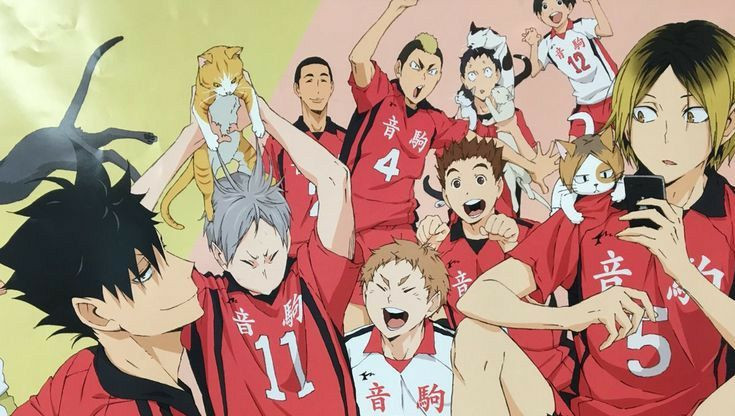

Tim bola voli Nekoma
Lambang : Kucing
Karena fleksibilitas para pemain dan penerimaan dan penggalian yang solid, tim Klub Bola Voli Putra dijuluki "Kucing", yang juga merupakan kiasan untuk nama sekolah.
Nekoma dan Karasuno dikatakan sebagai "saingan yang ditakdirkan" karena persaingan lama antara pelatih masing-masing, Nekomata dan Ukai. Karena perwakilan hewan kedua tim (kucing untuk Nekoma dan burung gagak untuk Karasuno) adalah hewan yang biasanya ditemukan di tempat sampah, pertandingan antara kedua tim sering disebut "Pertempuran di Tempat Pembuangan Sampah" atau "Trashcan Showdown" di anime. dubbing bahasa Inggris. Sejauh ini, Karasuno belum pernah menang melawan Nekoma di pertandingan latihan mereka. Namun, tim belum pernah bermain melawan satu sama lain untuk sementara waktu sampai saat ini selama periode waktu saat ini ketika Nekomata kembali dari pensiun (tercatat bahwa ketika Kuroo dan tahun ketiga lainnya saat ini adalah tahun kedua, Nekomata tidak ada).
Sebelum pertandingan, untuk "mengatur suasana", para pemain Nekoma selalu melafalkan nyanyian: "Kami seperti darah di pembuluh darah kami. Kami harus mengalir tanpa henti. Jaga oksigen Anda tetap bergerak dan pikiran Anda bekerja"[1]. Sulih suara bahasa Inggris telah mengubah kalimat ini menjadi: "Kami adalah plasma. Mari kita buat gerakan kita mengalir. Jaga agar oksigen tetap mengalir sehingga otak dapat bekerja secara maksimal."
Nekoma kalah di Preliminary Interhigh Prefektur Tokyo di perempat final, tetapi tahun ketiga memutuskan untuk tetap berada di tim untuk kesempatan berpartisipasi dalam Turnamen Musim Semi.
Nekoma memenuhi syarat sebagai perwakilan tuan rumah untuk SMA Musim Semi. Karena ukuran Tokyo dan menjadi tuan rumah turnamen yang biasa, prefektur mendapat tiga tempat perwakilan, jadi meskipun Nekoma kalah dari Fukurdani di semifinal, mereka mengalahkan Nohebi di pertandingan tempat ketiga dan karenanya lolos ke turnamen bersama dengan Itachiyama dan Fukurodani.
Nekoma juga merupakan anggota Grup Akademi Fukurodani, yang terdiri dari tim-tim dari Wilayah Kanto. Selama bertahun-tahun, sekolah telah mengadakan kamp pelatihan musim panas dan pertandingan latihan satu sama lain.
Pemain :
( 1 ) Tetsurō Kuroo
( 2 ) Nobuyuki Kai
( 3 ) Morisuke Yaku
( 4 ) Taketora Yamamoto
( 5 ) Kenma Kozume
( 6 ) Shōhei Fukunaga
( 7 ) Sō Inuoka
( 9 ) Tamahiko Teshiro
( 11 ) Lev Haiba
( 12 ) Yūki Shibayama